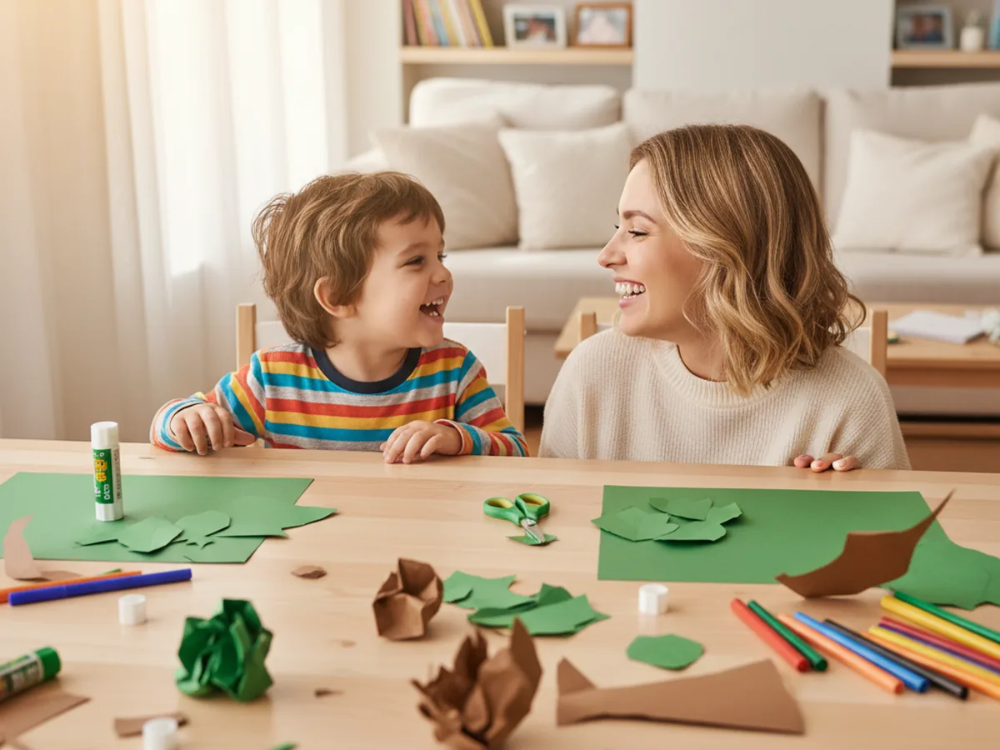
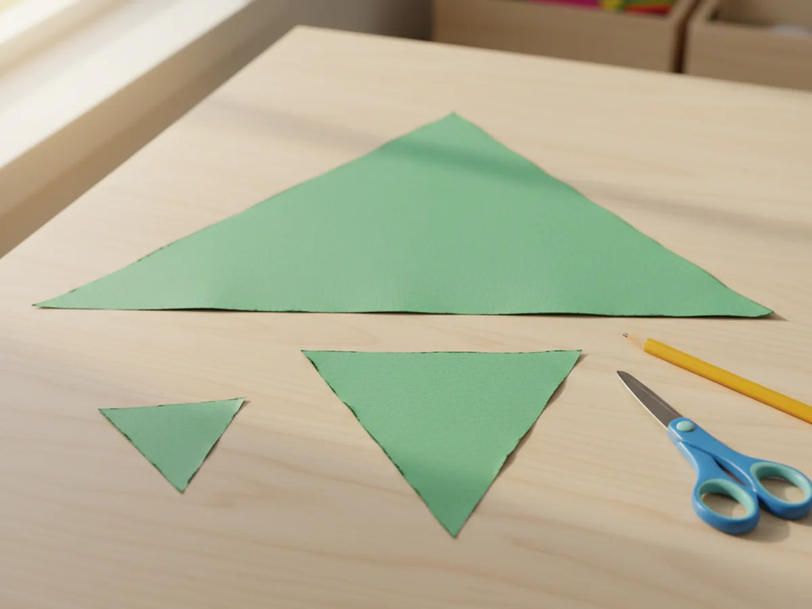
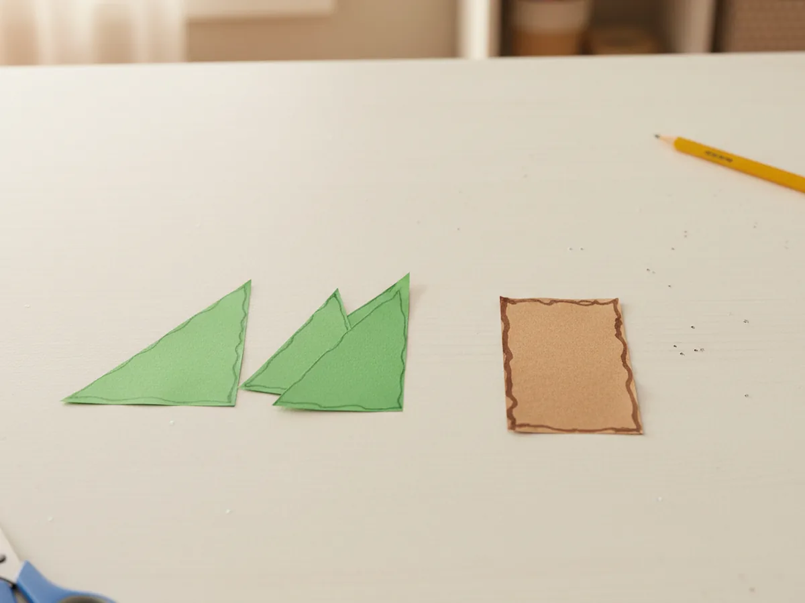
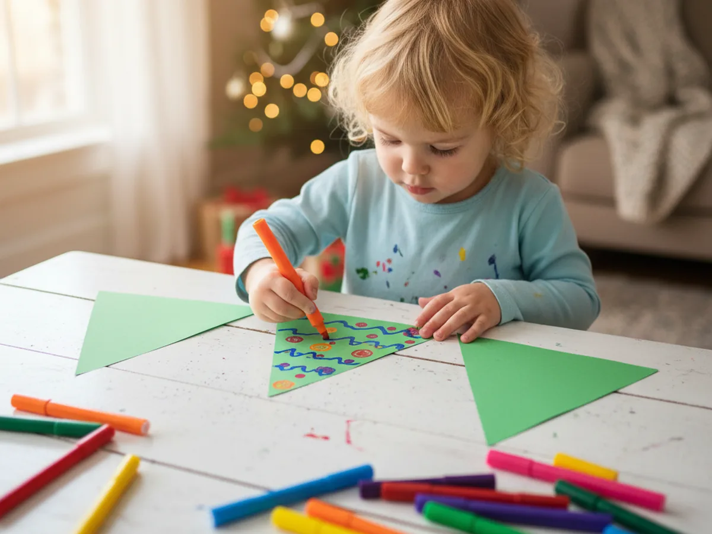
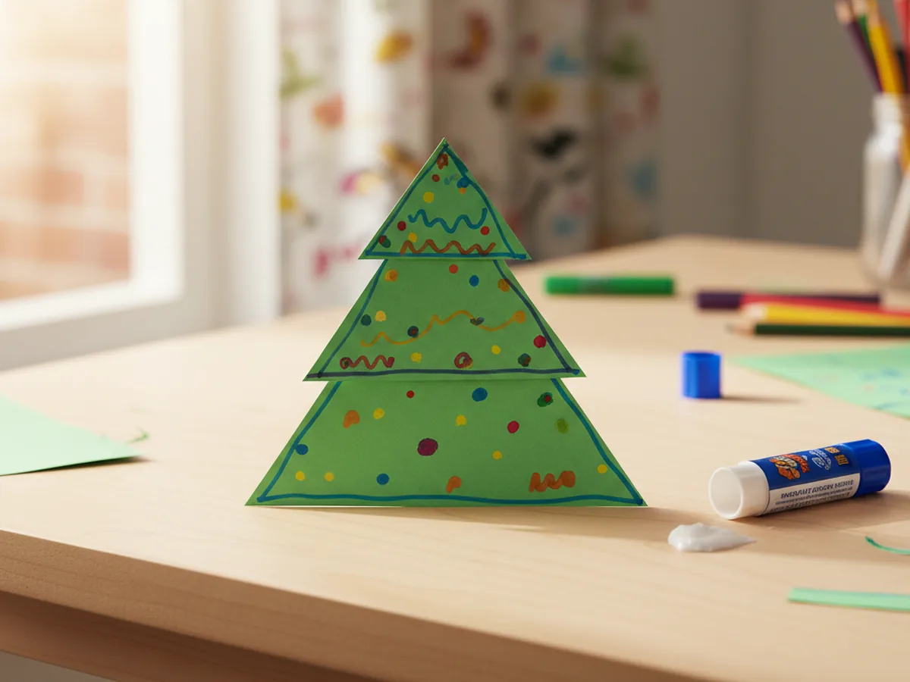
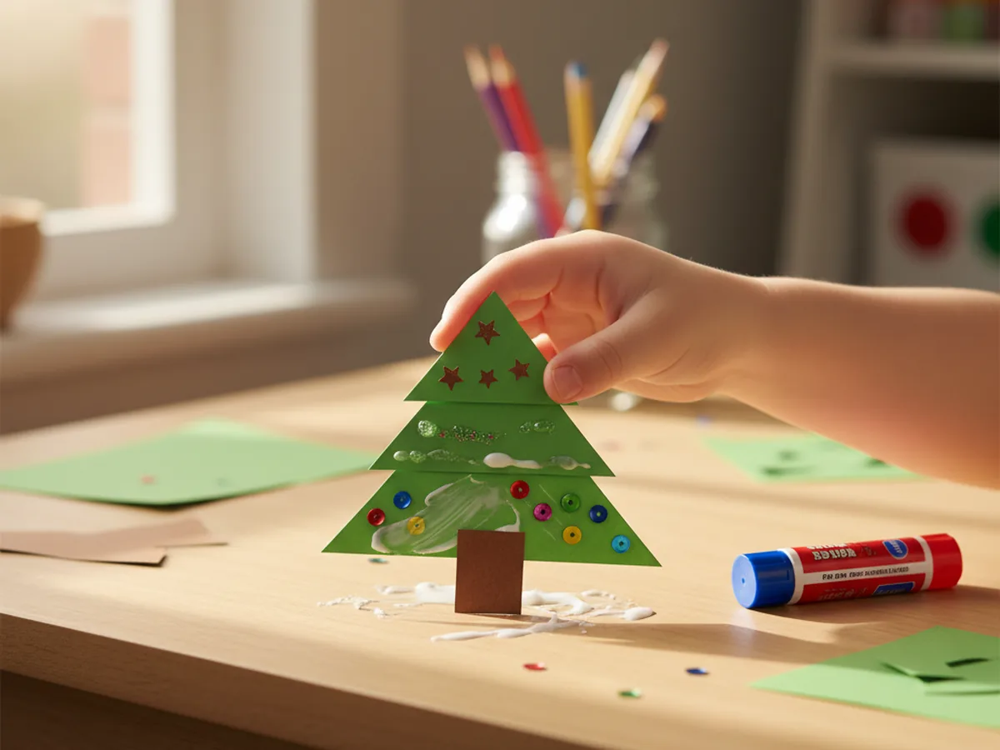
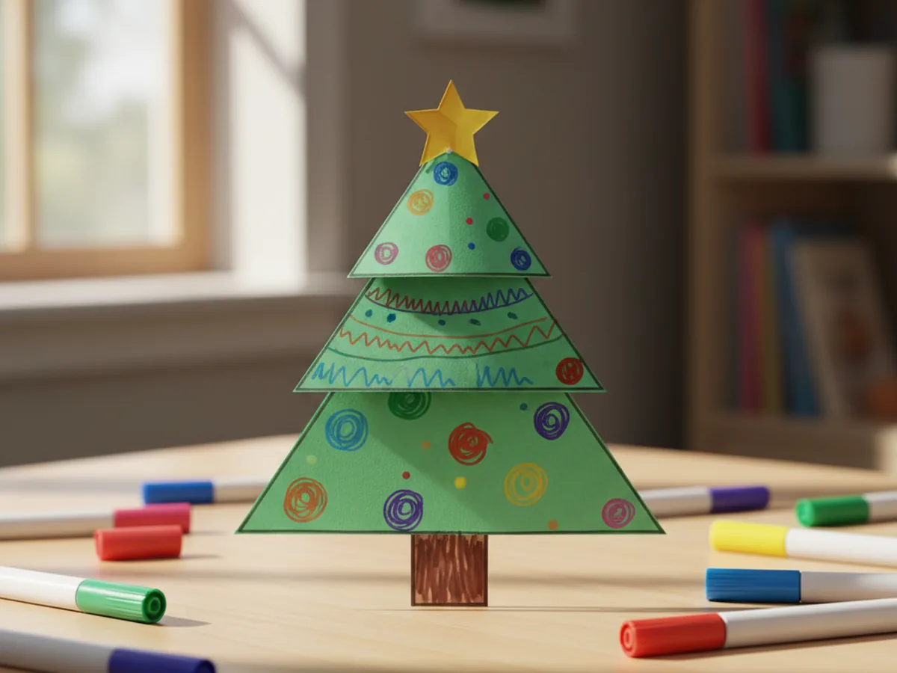

Published on April 11, 2026

There is something so satisfying about making a little tree out of nothing but colored paper. This paper tree craft uses three stacked green triangles, a simple brown trunk, and a tiny yellow star on top to create a finished result that looks adorable and takes just 20 minutes from start to finish. 🌲
It is the kind of project you can set up in minutes with supplies you already have at home. No paint, no glitter, no mess to worry about afterward. Just a simple, cheerful craft that your child can feel genuinely proud of when it is done.
Whether you make it as a cozy rainy-day activity, a little seasonal decoration, or a sweet homemade gift, this paper tree craft always lands well. The layered look is eye-catching, the steps are beginner-friendly, and the whole thing comes together faster than most kids expect.
This paper tree craft gives young children a rare combination of structure and freedom. The triangles and trunk give the craft a clear shape to work toward, so kids never feel lost. But the decorating step is completely open, which means every single tree looks a little different and uniquely theirs.
Cutting and gluing builds real fine motor skills in a fun, low-pressure way. There is something especially satisfying about stacking those three triangle tiers and watching the tree shape appear. Kids love seeing the layered tree come together step by step, and that little yellow star at the top always gets a big reaction the moment it goes on. The finished craft looks polished enough to display on a shelf or windowsill, which means the sense of pride and accomplishment lasts well beyond the craft table. 🌟

Everything you need for this paper tree craft is simple and beginner-friendly.
These steps are easy and beginner-friendly. Little ones as young as 3 can join in on the decorating and gluing, while older kids can handle the cutting themselves.
Use a pencil to draw three triangles on green construction paper: one large (about 8 inches wide at the base), one medium (about 6 inches wide), and one small (about 4 inches wide). They do not need to be perfectly even. Keep the sides gently curved or straight, whichever feels natural. Cut them out with child-safe scissors, or pre-cut them for younger children so they can jump straight to the fun parts.

Cut a rectangle from brown construction paper roughly 2 inches wide and 3 inches tall. This will be the base trunk of your paper tree craft. You can leave the bottom straight or trim the bottom corners gently for a softer look. The trunk does not need to be exact. A slightly wider or narrower trunk still looks great once the tree is assembled.

Now comes the most creative part. Let your child use washable markers to decorate each green triangle however they like. Colorful dots become ornaments. Zigzag lines become garlands. Small circles and swirls add texture and personality. Encourage them to cover the surface with color, since the bright patterns really pop once the tree is stacked together. This step is completely theirs to own.

Place the large green triangle flat on the table. Apply a small dot of glue to the center top, then press the medium triangle on top, leaving the bottom edge of the large triangle visible below it. Add another dot of glue to the top of the medium triangle and press the small triangle on top. Line up all three centers so the tiers are balanced. Press each layer gently and hold for a few seconds while the glue sets. The three tiers together create the classic layered Christmas tree shape.

Flip the assembled tree over carefully. Apply a line of glue along one short edge of the brown rectangle trunk. Press it firmly against the bottom center of the large triangle so it peeks out below the tree. Flip the whole piece back over and press flat on the table for a few seconds. The trunk should now be centered and stable, giving your paper tree craft a solid base to stand on or lean against a surface.

Cut a small star shape from yellow construction paper and glue it to the very top point of the tree. This is the finishing touch that always makes the whole craft feel complete. Once the star is in place, add any final marker details your child wants, like tiny white dots for snow, a brown paper pot at the base, or extra swirls and spots along the branches. Your finished paper tree craft is ready to display on a shelf, a wall, or a windowsill. 🌿

Autumn Tree Version: Swap the green triangles for orange, red, and yellow paper to create a beautiful fall tree. Use a darker brown for the trunk and add torn tissue paper bits as leaves falling around the base.
Toddler Torn Paper Tree: Skip the scissors entirely for very young children. Tear strips and chunks of green tissue paper and glue them onto a pre-cut triangle outline. The fluffy texture looks wonderful and keeps the activity completely safe for small hands.
Mini Forest Display: Make three or five trees in different sizes and stand them up together in a row using a folded paper tab at the back of each trunk. A little paper forest makes a sweet seasonal display for a bookshelf or windowsill.
This paper tree craft is one of those projects that feels just right, simple to set up, genuinely fun to make, and sweet enough to keep on display long after the craft table is cleared. The layered design looks impressive, but every step is completely manageable for beginners.
Whether you make it as a seasonal decoration, a rainy day activity, or a quick creative project before dinner, this little paper tree always delivers a big smile. Give it a try and enjoy the moment together. 🌲
If your child loved this paper tree craft, these other simple paper projects are perfect to try next.
Happy crafting, and enjoy every cheerful moment with your little one.